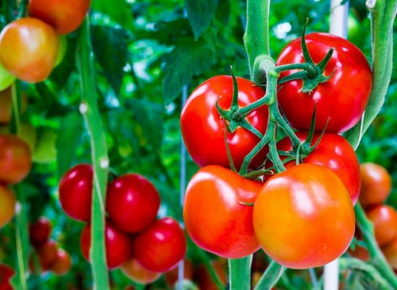

Tin tức 28/02/2018
Phụ nữ ăn nhiều cà chua sẽ có làn da khỏe đẹp, giảm nguy cơ béo phì và ung thư vú.
Cà chua có nhiều kích cỡ và màu sắc khi chín khác nhau (vàng, da cam, hồng, đỏ…), trong đó cà chua màu đỏ giàu chất dinh dưỡng và các hợp chất có hoạt tính sinh học nhất. Trong số các loại rau, củ, quả dùng làm rau thì cà chua chứa vitamin, chất khoáng và chất có hoạt tính sinh học nhiều nhất.
|  |
| Ảnh: G.W |
Theo Bảng thành phần thực phẩm Việt Nam, cà chua chứa nhiều vitamin C (40 mg trên 100 g), beta-caroten (393 mcg trên 100 g), lycopen (3.025 mcg trên 100 g), vitamin K (7,9 mcg trên 100g), một lượng đáng kể các chất khoáng cần thiết như kali, mangan, magie, đồng, sắt, kẽm và chất xơ hòa tan.
Cà chua có lợi cho sức khỏe ở mọi lứa tuổi. Phụ nữ ăn nhiều cà chua sẽ có làn da khỏe đẹp, giảm nguy cơ béo phì và ung thư vú. Nhiều nghiên cứu trên thế giới đã chứng minh tác dụng đặc biệt của cà chua đối với sức khỏe. Nó có nhiều vitamin, chất khoáng và vi khoáng dễ hấp thu, giúp cho cơ thể tăng cường khả năng miễn dịch, phòng chống nhiễm trùng.
Lycopen và beta-caroten trong cà chua có tác dụng chống ôxy hóa mạnh. Vi thế, chế độ ăn tăng cường cà chua góp phần làm chậm quá trình lão hóa và giảm nguy cơ ung thư vú, ung thư tuyến tiền liệt, ung thư đại tràng, ung thư vòm họng…
Ngoài ra, cà chua còn chứa nhiều hợp chất hóa thực vật khác và chất xơ giúp cho cơ thể bài xuất cholesterol, giảm cục máu đông, đề phòng các tai biến của bệnh tim mạch, bệnh béo phì. Cà chua ăn tươi, làm nước ép thì không bị mất vitamin C nhưng khi nấu chín như làm sốt cà chua, nấu canh với sườn, với thịt nạc hay riêu cua, riêu cá… lại làm tăng khả năng hấp thu lycopen và beta-caroten.
Nếu chưa ăn ngay, người tiêu dùng nên chọn mua quả cà chua đã chín nhưng còn cứng, không có đốm, không bị trầy vỏ hoặc dập nát, có thể bảo quản ở nhiệt độ phòng, tránh ánh nắng trực tiếp. Khi cà chua đã chín mềm thì cần đựng vào hộp kín, bảo quản ở ngăn mát tủ lạnh và đưa ra ngoài 30 phút trước khi sử dụng. Lưu ý, rửa kỹ cả quả cà chua dưới vòi nước để đảm bảo an toàn thực phẩm.